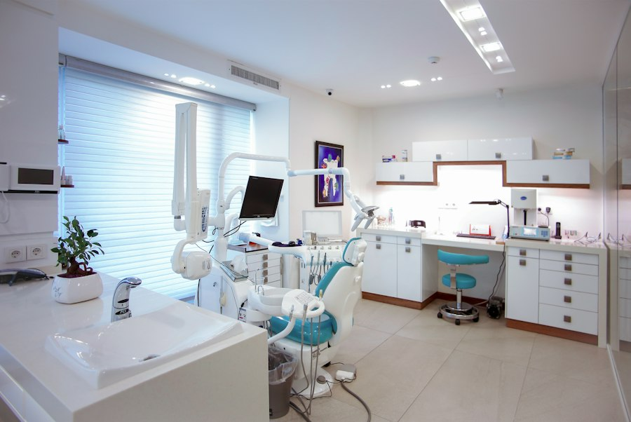
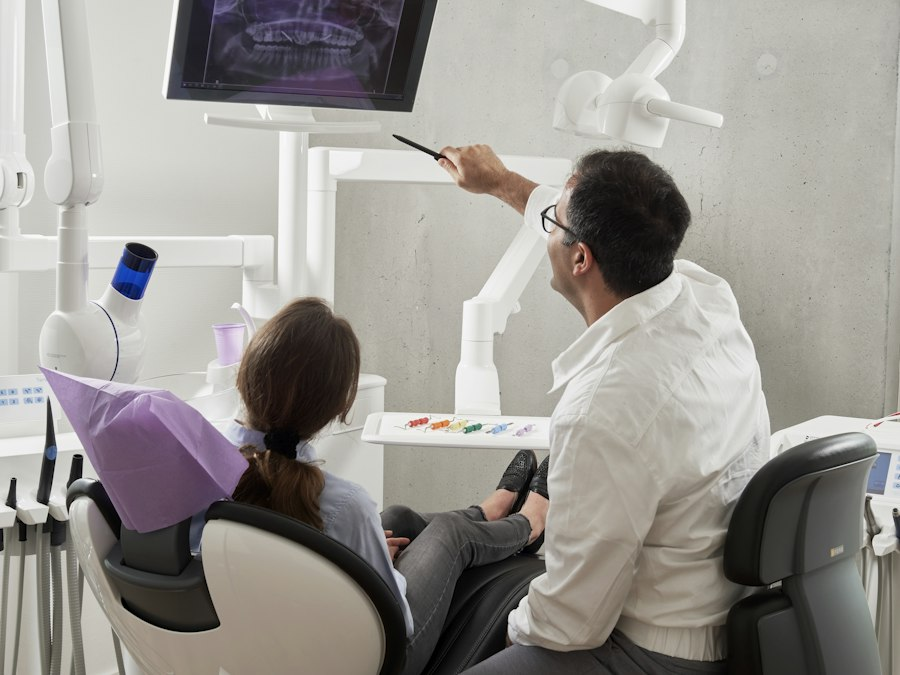
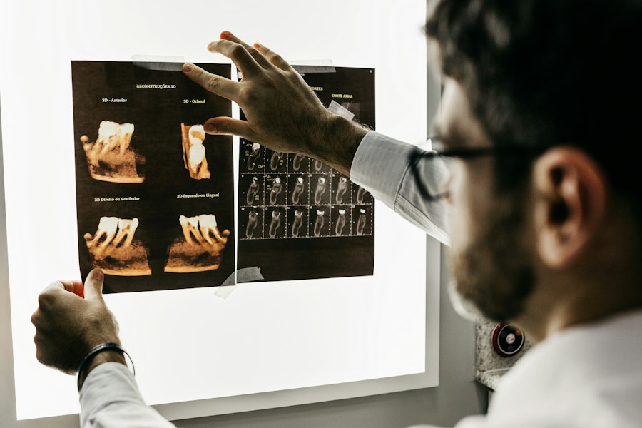
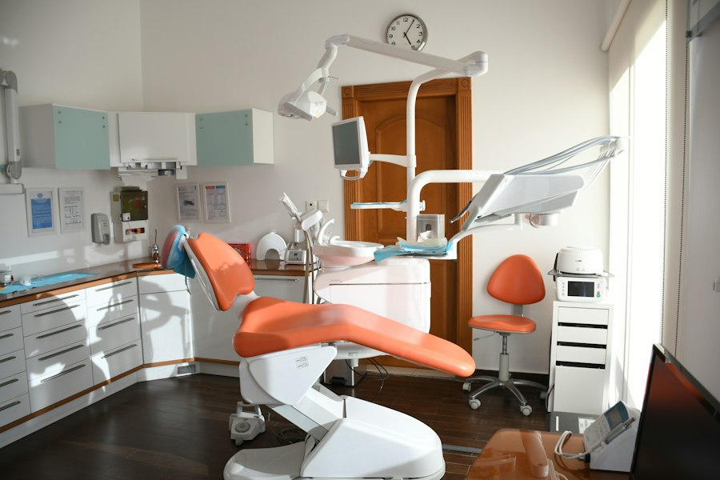

Ceník výkonů
| Služba | Cena | Poznámka |
|---|---|---|
| Preventivní prohlídka | 900 Kč | včetně RTG snímku |
| Bílá plomba (kompozit) | od 1 500 Kč | podle velikosti kazu |
| Ošetření kořenových kanálků | od 3 500 Kč | 1–3 kanálky |
| Extrakce zubu | od 1 200 Kč | jednoduchá / chirurgická |
| Dentální hygiena | 1 800 Kč | včetně pískování a fluoridace |
| Bělení zubů | od 4 500 Kč | ordinční metoda |
Ceny jsou orientační. Přesnou cenu vám sdělíme po vyšetření.
Galerie ordinace



